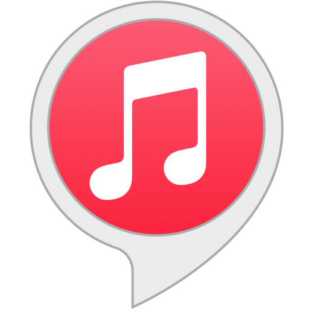

El concierto de la amistad
22/11/2021
El concierto de la amistad
En este trabajo hablaré acerca de cómo se conoce a la gente en los conciertos.
Desarrollo
Si en algún momento de tu vida has disfrutado de un concierto en vivo, te puedes dar cuenta que aparte de la genial música, la compañía y la gente que te rodea hace que esa experiencia sea increíble.
Yo creo que aunque los conciertos no estén técnicamente diseñados para conocer gente nueva, éstos "se dan" para hacerlo. Ya que yo he conocido gente increíble en conciertos.
Motivación
Lo que me motivó a realizar este blog de este tema son mis amistades a causa de los conciertos que he asistido.
 Ranking
Ranking